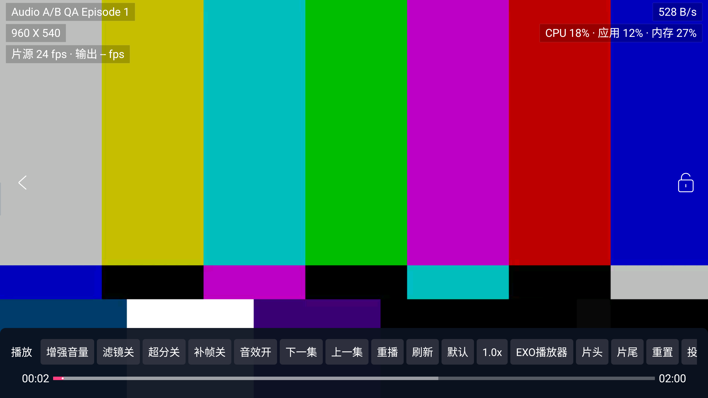
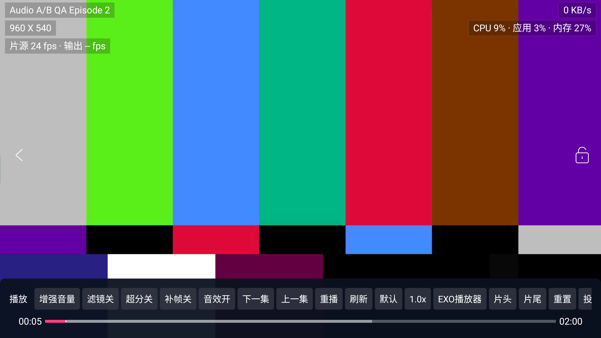

2026-11-21：已发布到 R2 主通道与 GitHub 备用 Release，源码提交 c94c23de；远端整包 SHA、资产摘要与原签名均已回读匹配，旧 r91 资产未变。
主机 26 项步骤、设备 75 项原生断言、8 张截图与像素检查通过，GitHub B01 CI 通过。旧 r91 本地预验记录未覆盖。
实际安装 APK SHA-256：d6ca0d7220e0c75f9edc1e09d53793e0c6bda509f0ad11222032dc7b9a7b30eb
MuMu API 35 不代替 B01 API 32 OEM 行为或听感。Lint 保留既存 1 Fatal、3 Error、1229 Warning；NewApi 为 0。R2 本次 Range 返回 200 完整内容，客户端会从头下载，未证明分段续传。

